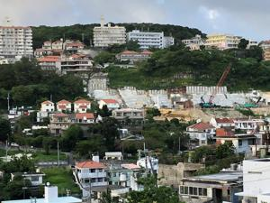

うるがいの話 ある日
最新: うつ
うるがいとは 前提知識です
カニの画像をクリックすると『うるがいの話』サイトを表示します
うるがい(ｳﾙｶﾞｲ urugai)とは、『もずくがに』の名前でとても大きくなります。
たながー（ﾀﾅｶﾞｰtanagaa）とは手長えびのことで、何種類かあり大きいのは車 エビぐらいになります。
ぶながー(bunagaa)とは、赤い髪の毛、赤い身体、そして身長は１ｍ２０ｃｍ ぐらい、川の蟹を食べているの目撃された。場所は沖縄県国頭郡大宜味村のと ある村僕の隣近所に住んでいる爺さんから、聞いた話です。
2021年07月18日 (日）
うつ
23:31

昨夜６時頃から、激痛ではないが尿路結石の痛みが襲ってきた。そうだ水分を
とらなければとカロリーゼロ・糖質ゼロ・プリン体ゼロのビールを飲む。テレ
ビを見てても集中力が欠けて面白くない、痛みをこらえること１時間、少し軽
くなってくる。そして、３時間後にはほとんど痛みを感じなくなった。やれや
れ、である。退屈日記のプログの辻仁成さんが、「うつっぽい父ちゃんから、
うつの人を理解してあげて、というお願い」からうつ状態になっているようだ
。私の子供も、仕事のストレスで眠れなかったが心療内科から、薬をもらいよ
く眠れるといっている。ただ、会社の同僚との電話でラリっている感じと言わ
れたらしい。仕事をしていない子供が心配で、なるべく会えるよう「寿司ある
けど、いる？」等と釣って会っている、いまのところは大丈夫のようだ。友達
も仕事でイライラしている、うん、わかる。何処にでもストレスを与える人達
がいる。特にＫという輩はとんでもない、ある重要なシステムでトラブルにな
った時、私と私の管理職面等向かって「年上の人にこう言うのは失礼だがお陰
で迷惑している！」と言われた。それまでも距離を置いていたが、敵とみなす
ことにした。ただ、私の場合、何故か味方になる力のある人物が、現れ毎度救
われていた。子供は、一昨年前に前の職場の上司にパワハラされ、涙を流しな
がら仕事をしていたと話してくれた。心療内科の先生もその時点で、病院へ来
るべきだったと言われたとの事。今は私が無職になり、四六時中、家に籠って
いる事もあり、２週間毎に家に現れる。そして、３０分程、何やら話していく
今はそれでストレス解消になっているかも。そして、もう一人のコドモは長い
紛争にやっとメドがつき、ストレスから解放されたのか裏の畑で、野菜を育て
たいと畑の土を耕す。後片付けは私が、やるのだが、週一の訪問から昨日のよ
うに突然、アポなしで家にくる。コドモの確か心療内科に通っていたはずだが
生きていくのは大変である。今朝、３時半に目が覚める。昨日、いろいろあっ
たせいもあるかも。そして、パソコンを立ち上げ藤川徳美「うつ消しごはん」
を図書館から借りるべく予約した。お、台風６号発生している。
ドラマ「ひきこもり先生」から、番組の初めの回に「生きるんだ、とにかく生
きるんだ」、そして、最終回の「できる、できる、できる！」・・が印象的に
残っている。はるか昔、うつになり今はこの世にいない身内や知り合いの人達
を思う。
みんなが幸せになるホ・オポノポノを唱えるべ
「ありがとう」
「ごめんなさい」
「許してください」
「愛しています」
週明けから天気は崩れる、おお、いまのうちに走るぜ。